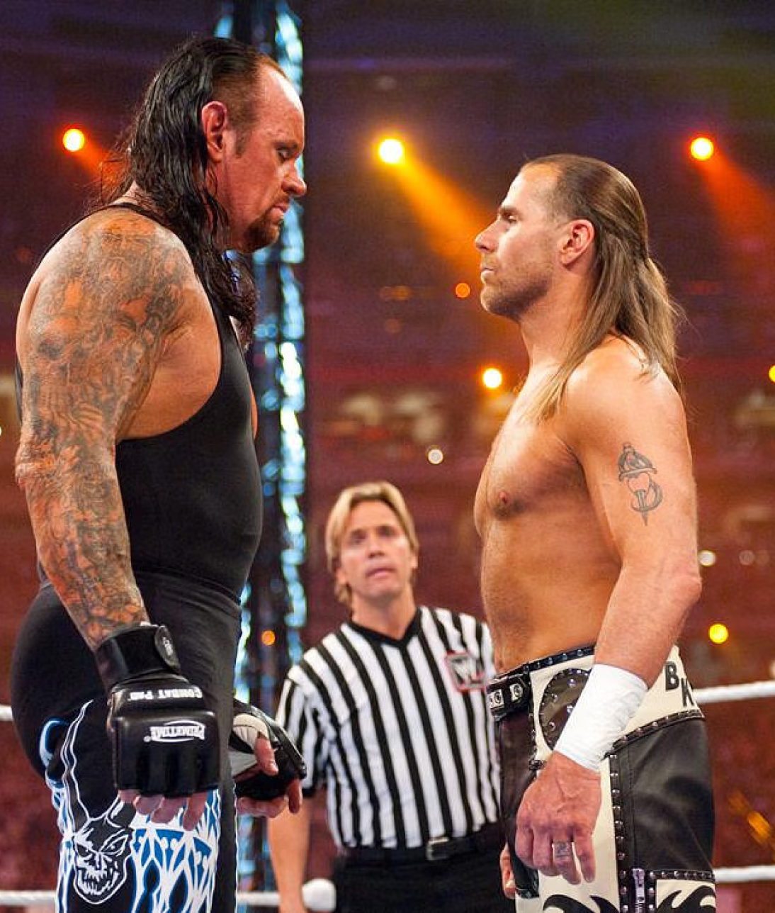

Histoire du Catch

LLe catch, également connu sous le nom de lutte professionnelle, a une histoire riche et captivante qui remonte à l'Antiquité. Ses racines peuvent être retracées dans les compétitions sportives de la Grèce antique, où les lutteurs s'affrontaient dans des épreuves de force et d'adresse. Cependant, le catch moderne a émergé au début du 20e siècle aux États-Unis, avec l'introduction de règles et de personnages flamboyants qui ont contribué à populariser le sport à travers le monde.
Les légendes du Catch

Gorgious George

Lou thesz

Edouard Carpentier
L'âge d'or du catch a été marqué par l'avènement de la télévision, dans les années 1950 et 1960, qui a permis au catch de toucher un public beaucoup plus vaste. Des icônes telles que Gorgeous George et Lou Thesz sont devenues des légendes du ring, captivant les spectateurs avec des rivalités épiques et des scénarios dramatiques. Les décennies suivantes ont vu l'émergence de superstars emblématiques telles que Hulk Hogan, The Rock et Stone Cold Steve Austin, qui ont contribué à populariser le catch à un niveau mondial et à en faire une véritable forme de divertissement
Aujourd'hui, le catch continue d'évoluer avec des fédérations telles que la WWE (World Wrestling Entertainment) qui organisent des événements à grande échelle et diffusent des émissions à travers le monde. Le catch mélange l'athlétisme, le théâtre et le spectacle pour offrir une expérience unique aux fans. Il reste un phénomène culturel, attirant des millions de spectateurs à chaque événement et perpétuant la tradition d'une forme de divertissement qui a su se réinventer au fil des décennies.
Catch Moderne
Les rivalités entre les superstars du catch sont comme des sagas épiques, captivant les fans avec des histoires de rivalité, de trahison et de rédemption. Ces affrontements intenses ne sont pas seulement pour le spectacle, mais aussi pour la gloire et la reconnaissance, chaque lutteur aspirant à se hisser au sommet de la hiérarchie du catch. Les motivations des superstars varient, certains cherchant à prouver leur supériorité athlétique, d'autres à venger des injustices passées, tandis que d'autres encore sont motivés par la simple ambition de devenir des légendes du catch. Derrière chaque rivalité se cache une histoire complexe, tissée de désirs personnels, de rivalités familiales et de querelles sur le ring, alimentant le feu de la compétition. Pour les superstars du catch, chaque combat est une opportunité de se surpasser, de repousser leurs limites et de montrer au monde entier qu'ils sont les meilleurs dans leur domaine. Que ce soit pour la gloire, la fortune ou simplement pour prouver leur valeur, les motivations des superstars du catch les poussent à se lancer dans des rivalités épiques qui restent gravées dans l'histoire de ce sport passionnant
Les rivalités dans le monde du catch sont légendaires en raison de leur capacité à captiver l'imagination des fans et à créer des moments mémorables qui restent gravés dans l'histoire du sport. Ces rivalités sont le cœur même du spectacle, mettant en scène des affrontements épiques entre des personnages emblématiques, chacun avec ses propres motivations et aspirations. Les tensions palpables, les trahisons inattendues et les rebondissements dramatiques font de chaque rivalité une saga captivante qui suscite l'émotion et l'excitation chez les spectateurs. Au fil du temps, ces rivalités deviennent des légendes, marquant l'histoire du catch et laissant une empreinte indélébile dans l'esprit des fans, qui se remémorent avec passion les grands moments et les batailles épiques qui ont façonné le paysage du catch professionnel.